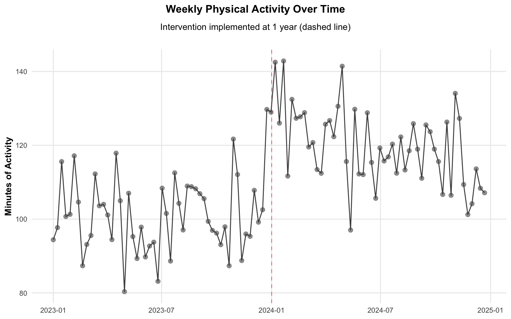
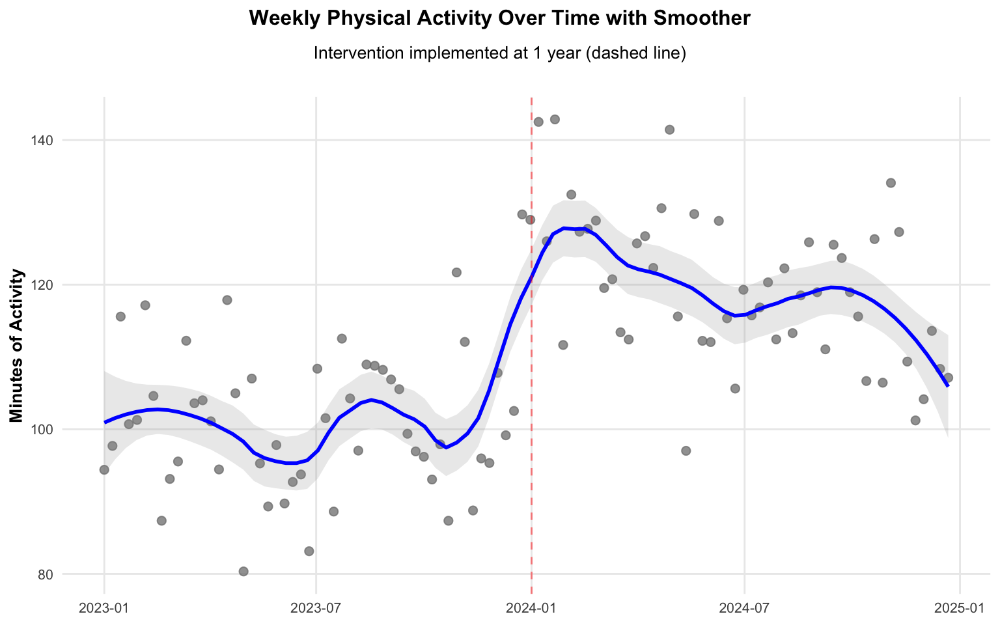
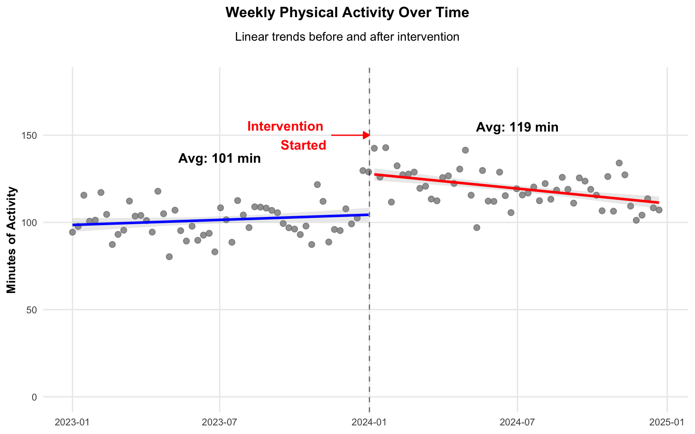
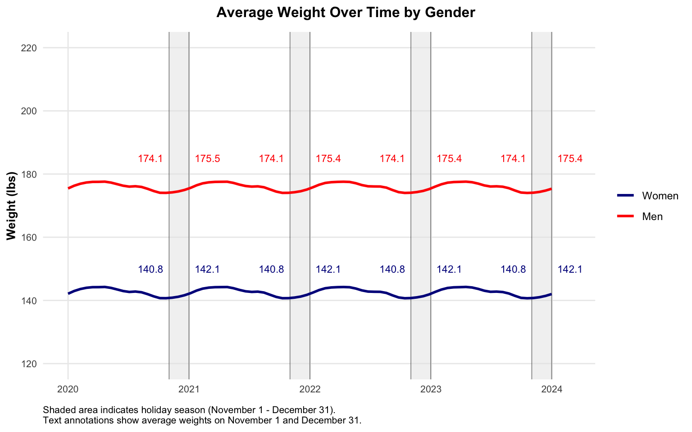

# Set seed for reproducibility
set.seed(123)
# Generate time series data
n_weeks <- 104 # 2 years of weekly data
intervention_week <- 52 # Intervention at 1 year
# Create base data
time_data <- tibble(
week = 1:n_weeks,
date = as.Date("2023-01-01") + weeks(week - 1),
# Base level (flat)
base_level = 100,
# Random noise
noise = rnorm(n_weeks, mean = 0, sd = 10),
# Intervention effect with decay
intervention = ifelse(
week >= intervention_week,
30 * exp(-0.02 * (week - intervention_week)), # Exponential decay
0
),
# Combine components
value = base_level + noise + intervention
)
# Add gender effect for later use
time_data <- time_data |>
crossing(gender = c("Male", "Female")) |>
mutate(
# Add gender-specific effects
gender_effect = ifelse(gender == "Female", -15, 15),
# Add gender-specific intervention effects with decay
gender_intervention = ifelse(
week >= intervention_week,
ifelse(
gender == "Female",
40 * exp(-0.02 * (week - intervention_week)), # Larger effect for females
20 * exp(-0.02 * (week - intervention_week))
),
0
),
# Combine all effects
value_gender = value + gender_effect + gender_intervention
)Application 5: Time Trends
Time Series Plots
Time series plots are a common way to visualize data over time. They are useful for showing trends and patterns in data over time.
# Create basic time series plot
p_time <-
ggplot(time_data, aes(x = date, y = value)) +
# Add points
geom_point(
size = 2,
alpha = 0.5,
color = "gray50"
) +
# Add line
geom_line(
color = "gray30",
linewidth = 0.5
) +
# Add vertical line for intervention
geom_vline(
xintercept = as.Date("2024-01-01"),
linetype = "dashed",
color = "red",
alpha = 0.5
) +
# Add labels
labs(
title = "Weekly Physical Activity Over Time",
subtitle = "Intervention implemented at 1 year (dashed line)",
x = NULL,
y = "Minutes of Activity"
) +
# Customize theme
theme_minimal() +
theme(
plot.title = element_text(size = 12, face = "bold", hjust = 0.5, margin = margin(b = 10)),
plot.subtitle = element_text(size = 10, hjust = 0.5, margin = margin(b = 20)),
plot.title.position = "plot",
axis.title = element_text(size = 10, face = "bold"),
axis.text = element_text(size = 8),
panel.grid.minor = element_blank()
)
p_time
Time Series Plots with Smoothers
Smoothers are a common way to visualize trends in data over time. Below, we use a loess smoother to visualize the trend in the data.
# Create time series plot with smoother
p_time_smooth <- ggplot(time_data, aes(x = date, y = value)) +
# Add points
geom_point(
size = 2,
alpha = 0.5,
color = "gray50"
) +
# Add smoother
geom_smooth(
method = "loess",
span = 0.3,
color = "blue",
linewidth = 1,
se = TRUE,
alpha = 0.2
) +
# Add vertical line for intervention
geom_vline(
xintercept = as.Date("2024-01-01"),
linetype = "dashed",
color = "red",
alpha = 0.5
) +
# Add labels
labs(
title = "Weekly Physical Activity Over Time with Smoother",
subtitle = "Intervention implemented at 1 year (dashed line)",
x = NULL,
y = "Minutes of Activity"
) +
# Customize theme
theme_minimal() +
theme(
plot.title = element_text(size = 12, face = "bold", hjust = 0.5, margin = margin(b = 10)),
plot.subtitle = element_text(size = 10, hjust = 0.5, margin = margin(b = 20)),
plot.title.position = "plot",
axis.title = element_text(size = 10, face = "bold"),
axis.text = element_text(size = 8),
panel.grid.minor = element_blank()
)
p_time_smooth
Interrupted Time Series Plots
Interrupted time series plots are a common way to visualize the effect of an intervention on a time series. Below, we fit a linear model to the data before and after the intervention and visualize the trend in the data before and after the intervention. We annotate the plot with the average weight before and after the intervention. This specific example a “regression discontinuity” design.
# Calculate averages for annotation
avg_before <- time_data |>
filter(date < as.Date("2024-01-01")) |>
summarise(avg = mean(value)) |>
mutate(
x = as.Date("2023-07-01"),
label = sprintf("Avg: %.0f min", avg)
)
avg_after <- time_data |>
filter(date >= as.Date("2024-01-01")) |>
summarise(avg = mean(value)) |>
mutate(
x = as.Date("2024-07-01"),
label = sprintf("Avg: %.0f min", avg)
)
# Create time series plot with separate linear models
p_time_lm <- ggplot(time_data, aes(x = date, y = value)) +
# Add points
geom_point(
size = 2,
alpha = 0.5,
color = "gray50"
) +
# Add linear model for pre-intervention
geom_smooth(
data = filter(time_data, date < as.Date("2024-01-01")),
method = "lm",
color = "blue",
linewidth = 1,
se = TRUE,
alpha = 0.2
) +
# Add linear model for post-intervention
geom_smooth(
data = filter(time_data, date >= as.Date("2024-01-01")),
method = "lm",
color = "red",
linewidth = 1,
se = TRUE,
alpha = 0.2
) +
# Add vertical line for intervention
geom_vline(
xintercept = as.Date("2024-01-01"),
linetype = "dashed",
color = "black",
alpha = 0.5
) +
# Add arrow and annotation
annotate(
"segment",
x = as.Date("2023-11-15"),
xend = as.Date("2024-01-01"),
y = 150,
yend = 150,
arrow = arrow(length = unit(0.2, "cm"), ends = "last", type = "closed"),
color = "red"
) +
annotate(
"text",
x = as.Date("2023-11-15"),
y = 150,
label = "Intervention\nStarted",
hjust = 1.1,
color = "red",
fontface = "bold"
) +
# Add average annotations
geom_text(
data = avg_before,
aes(x = x, y = avg, label = label),
hjust = 0.5,
vjust = -6,
fontface = "bold",
color = "black"
) +
geom_text(
data = avg_after,
aes(x = x, y = avg, label = label),
hjust = 0.5,
vjust = -6,
fontface = "bold",
color = "black"
) +
# Add labels
labs(
title = "Weekly Physical Activity Over Time",
subtitle = "Linear trends before and after intervention",
x = NULL,
y = "Minutes of Activity"
) +
# Customize theme
theme_minimal() +
theme(
plot.title = element_text(size = 12, face = "bold", hjust = 0.5, margin = margin(b = 10)),
plot.subtitle = element_text(size = 10, hjust = 0.5, margin = margin(b = 20)),
plot.title.position = "plot",
axis.title = element_text(size = 10, face = "bold"),
axis.text = element_text(size = 8),
panel.grid.minor = element_blank()
) +
scale_y_continuous(
limits = c(0, 180)
)
p_time_lm
Using Labels, Shading, and Annotations
We can use labels, shading, and annotations to add additional information to our plots.
# Set seed for reproducibility
set.seed(123)
# Generate dates for 4 years
dates <- seq.Date(
from = as.Date("2020-01-01"),
to = as.Date("2023-12-31"),
by = "day"
)
# Generate person IDs and their base characteristics
n_people <- 300
person_data <- tibble(
person_id = 1:n_people,
gender = sample(c("Male", "Female"), n_people, replace = TRUE),
# Base weight varies by person (in pounds)
base_weight = case_when(
gender == "Male" ~ rnorm(n_people, mean = 176, sd = 15), # Mean 176 lbs, SD 15
TRUE ~ rnorm(n_people, mean = 143, sd = 12) # Mean 143 lbs, SD 12
),
# Individual seasonal sensitivity
seasonal_sensitivity = rnorm(n_people, mean = 1, sd = 0.2) # Some people more sensitive to seasons
)
# Create base data frame with all person-dates
weight_data <- crossing(
date = dates,
person_id = 1:n_people
) |>
left_join(person_data, by = "person_id") |>
mutate(
month = month(date),
day_of_year = yday(date),
# Small seasonal effect (2-3 pounds total)
seasonal_effect = case_when(
month %in% c(12, 1, 2) ~ 2.5 * sin((day_of_year - 15) * 2 * pi / 365), # Winter peak
month %in% c(3, 4, 5) ~ 1.5 * sin((day_of_year - 15) * 2 * pi / 365), # Spring
month %in% c(6, 7, 8) ~ 0, # Summer
TRUE ~ 2.0 * sin((day_of_year - 15) * 2 * pi / 365) # Fall
),
# Apply individual sensitivity to seasonal effect
seasonal_effect = seasonal_effect * seasonal_sensitivity,
# Add very small random noise (0.2 lbs)
noise = rnorm(n(), 0, 0.2),
# Calculate final weight
weight = base_weight + seasonal_effect + noise
)
# Calculate daily averages by gender
daily_averages <- weight_data |>
group_by(date, gender) |>
summarise(
avg_weight = mean(weight),
.groups = "drop"
)
# Create annotation data frame
annotation_dates <- c(
as.Date("2020-11-01"), as.Date("2020-12-31"),
as.Date("2021-11-01"), as.Date("2021-12-31"),
as.Date("2022-11-01"), as.Date("2022-12-31"),
as.Date("2023-11-01"), as.Date("2023-12-31")
)
annotations <- daily_averages |>
filter(date %in% annotation_dates) |>
mutate(
label = sprintf("%.1f", avg_weight),
text_x = case_when(
month(date) == 11 ~ date - 56, # Dodge left for November
TRUE ~ date + 56 # Dodge right for December
),
text_y = case_when(
gender == "Female" ~ 150, # Fixed position for men (lowered from 155)
TRUE ~ 185 # Fixed position for women
)
)
# Create time series plot
p_weight <- ggplot(daily_averages, aes(x = date, y = avg_weight, color = gender)) +
# Add holiday season shading
annotate(
"rect",
xmin = as.Date("2020-11-01"),
xmax = as.Date("2020-12-31"),
ymin = -Inf,
ymax = Inf,
fill = "gray90",
alpha = 0.5
) +
annotate(
"rect",
xmin = as.Date("2021-11-01"),
xmax = as.Date("2021-12-31"),
ymin = -Inf,
ymax = Inf,
fill = "gray90",
alpha = 0.5
) +
annotate(
"rect",
xmin = as.Date("2022-11-01"),
xmax = as.Date("2022-12-31"),
ymin = -Inf,
ymax = Inf,
fill = "gray90",
alpha = 0.5
) +
annotate(
"rect",
xmin = as.Date("2023-11-01"),
xmax = as.Date("2023-12-31"),
ymin = -Inf,
ymax = Inf,
fill = "gray90",
alpha = 0.5
) +
# Add vertical lines for Nov 1 and Dec 31
geom_vline(
data = annotations,
aes(xintercept = date),
linewidth = 0.3,
alpha = 0.5,
show.legend = FALSE
) +
# Add smoothed lines
geom_smooth(
method = "loess",
span = 0.1,
linewidth = 1,
se = TRUE,
alpha = 0.2
) +
# Add text labels
geom_text(
data = annotations,
aes(
x = text_x,
y = text_y,
label = label,
color = gender
),
size = 3,
show.legend = FALSE
) +
# Add labels
labs(
title = "Average Weight Over Time by Gender",
x = NULL,
y = "Weight (lbs)",
caption = "Shaded area indicates holiday season (November 1 - December 31).\nText annotations show average weights on November 1 and December 31."
) +
# Customize theme
theme_minimal() +
theme(
plot.title = element_text(size = 12, face = "bold", hjust = 0.5, margin = margin(b = 10)),
plot.title.position = "plot",
plot.caption = element_text(size = 8, hjust = 0, margin = margin(t = 10)),
axis.title = element_text(size = 10, face = "bold"),
axis.text = element_text(size = 8),
panel.grid.minor = element_blank(),
legend.position = "right",
legend.title = element_blank()
) +
# Extend y-axis range
scale_y_continuous(
limits = c(120, 220),
breaks = seq(120, 220, by = 20)
) +
# Use different colors for genders
scale_color_manual(
values = c(
"Male" = "red",
"Female" = "darkblue"
),
labels = c("Women", "Men")
) +
# Remove rect from legend and fix the "a" issue
guides(color = guide_legend(override.aes = list(shape = NA, fill = NA, linetype = 1, label = NULL, text = NULL)))
p_weight
Sankey Diagrams
Sankey diagrams are a common way to visualize the flow of data. Below, we create a Sankey diagram to visualize simulated data of patients with hypertension who change treatments over time.
# Create treatment pattern data
set.seed(123)
# Define possible treatments (common hypertension medications)
treatments <- c("ACE Inhibitor", "ARB", "CCB", "No Treatment")
# Generate patient data with treatment changes
n_patients <- 1000
patient_data <- tibble(
patient_id = 1:n_patients,
initial_treatment = sample(treatments, n_patients, replace = TRUE,
prob = c(0.4, 0.3, 0.2, 0.1)), # ACE inhibitors most common first-line
# 60% of patients change treatment at least once
has_change = rbinom(n_patients, 1, 0.6),
# For those who change, determine second treatment
second_treatment = case_when(
has_change == 1 ~ sample(treatments, n_patients, replace = TRUE,
prob = c(0.3, 0.3, 0.3, 0.1)),
TRUE ~ initial_treatment
),
# 30% of patients who changed once change again
has_second_change = case_when(
has_change == 1 ~ rbinom(n_patients, 1, 0.3),
TRUE ~ 0
),
# For those who change twice, determine third treatment
third_treatment = case_when(
has_second_change == 1 ~ sample(treatments, n_patients, replace = TRUE,
prob = c(0.2, 0.2, 0.2, 0.4)),
TRUE ~ second_treatment
)
)
# Create Sankey diagram data
# Create nodes data frame
nodes <- data.frame(
name = c(
treatments, # First column
treatments, # Second column
treatments # Third column
)
)
# Create links data frame
links <- patient_data |>
count(initial_treatment, second_treatment, third_treatment) |>
filter(n > 0) |>
mutate(
source = match(initial_treatment, nodes$name) - 1,
target = match(second_treatment, nodes$name) - 1 + length(treatments),
value = n
) |>
select(source, target, value)
# Add second stage links
links_second <- patient_data |>
count(second_treatment, third_treatment) |>
filter(n > 0) |>
mutate(
source = match(second_treatment, nodes$name) - 1 + length(treatments),
target = match(third_treatment, nodes$name) - 1 + 2 * length(treatments),
value = n
) |>
select(source, target, value)
links <- bind_rows(links, links_second)
# Create Sankey diagram
p_sankey <- sankeyNetwork(
Links = links,
Nodes = nodes,
Source = "source",
Target = "target",
Value = "value",
NodeID = "name",
fontSize = 12,
nodeWidth = 30,
sinksRight = FALSE
)
# Add title using HTML
p_sankey <- htmlwidgets::prependContent(
p_sankey,
htmltools::tags$h3("Hypertension Treatment Pattern Flow Over Time")
)
p_sankeyHypertension Treatment Pattern Flow Over Time
Sunburst Plots
Sunburst plots are another common way to visualize the flow of data. Below, we create a Sunburst plot to visualize the distribution of patients with hypertension who change treatments over time.
These show the distribution of patients by treatment at each stage of the process, using color to indicate the treatment at each stage.
# Create Sunburst plot data
# Create properly formatted sunburst data with three levels
sunburst_data <- patient_data |>
# Create paths for each treatment stage
mutate(
ids = paste0("initial_", initial_treatment),
labels = initial_treatment,
parents = "",
values = 1,
level = "initial"
) |>
bind_rows(
patient_data |>
filter(has_change == 1) |>
mutate(
ids = paste0("second_", initial_treatment, "_", second_treatment),
labels = second_treatment,
parents = paste0("initial_", initial_treatment),
values = 1,
level = "second"
)
) |>
bind_rows(
patient_data |>
filter(has_second_change == 1) |>
mutate(
ids = paste0("third_", initial_treatment, "_", second_treatment, "_", third_treatment),
labels = third_treatment,
parents = paste0("second_", initial_treatment, "_", second_treatment),
values = 1,
level = "third"
)
) |>
group_by(ids, labels, parents, level) |>
summarise(values = sum(values), .groups = "drop")
# Create color scales for each level
initial_colors <- viridis::viridis(4)
second_colors <- viridis::viridis(4, begin = 0.3, end = 0.7)
third_colors <- viridis::viridis(4, begin = 0.6, end = 1)
# Create Sunburst plot using plotly
p_sunburst <- plot_ly(
sunburst_data,
ids = ~ids,
labels = ~labels,
parents = ~parents,
values = ~values,
type = "sunburst",
branchvalues = "total",
marker = list(
colors = case_when(
sunburst_data$level == "initial" ~ initial_colors[match(sunburst_data$labels, treatments)],
sunburst_data$level == "second" ~ second_colors[match(sunburst_data$labels, treatments)],
sunburst_data$level == "third" ~ third_colors[match(sunburst_data$labels, treatments)]
)
)
) |>
layout(
title = "Hypertension Treatment Pattern Distribution",
width = 800,
height = 800
)
# Display plots
p_sunburst